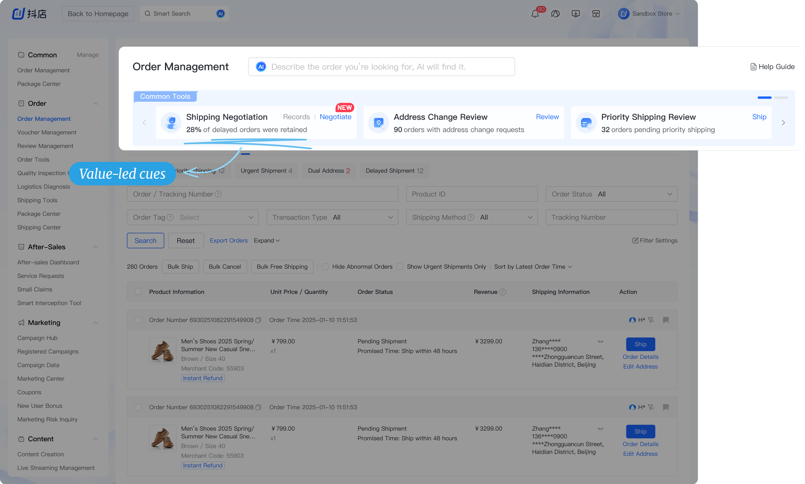

Helping merchants handle exception orders without leaving their primary order-processing workflow
This project was completed during my internship at ByteDance, within the Douyin E-commerce team (TikTok Shop China), focusing on the merchant-facing platform: Doudian.
I integrated Order Tools into Order Management, enabling merchants to handle exception orders without leaving their primary workflow. To accommodate the integration, I also restructured the filtering area to improve screen efficiency and optimize the use of vertical space.

One place to manage orders, another to handle exceptions
Douyin E-commerce has two separate modules for handling orders. Order Management supports high-volume, standardized order processing, while Order Tools handles less frequent, more complex exceptions, such as address changes and shipping negotiations.

Order Management
- Track orders shipping status
- Take individual and bulk order actions

Order Tools
- Handle exceptions outside the standard flow
- Configure review and automation rules
Exception handling sat outside merchants' daily workflow
Merchants couldn’t tell which exception requests needed attention without checking Order Tools separately. Many learned about a request only when customer support called — too late to avoid a refund or a reshipment.

Shaping the direction and boundaries of the solution
Merchants were expected to check for exceptions themselves. I explored how the order workspace could help them stay on top of this work without disrupting routine fulfillment.
I started by thinking about when and where merchants could notice exception requests. Could checking become a regular step in their routine? Should a notification prompt them to act? Or could requests appear alongside the orders they were already processing? I explored these three approaches to understand how each would fit into merchants’ day.
Establish a review step
Add exception review to the workflow, for example checking related requests together before batch shipping.
Is the added step worth it?Is a batched check timely enough?
Trigger a notification
Proactively alert merchants when a request arrives.
Will alerts be ignored?Will they interrupt the work in progress?
Embed discovery in daily work
Surface exceptions as merchants carry out their existing order-processing tasks.
How can tasks earn attention without disrupting routine work?
Bringing exception tasks into Order Management did not necessarily mean bringing every handling flow with them.
The selected approach surfaced task information and access points in the main workspace, while keeping exception-specific actions in Order Tools. This retained the existing handling flows for different exception types while making their tasks easier to access.
Order Management
- Discover requests
- See task information
- Enter the relevant tool
Order Tools
- Review request details
- Complete exception-specific actions
Tradeoff: merchants still switch workspaces to complete the task.
Bringing exceptions into Order Management created a tradeoff: they needed to be noticeable without overwhelming routine order processing.
I compared how different approaches communicated pending work and how much space and attention they demanded.
A general reminder

- Provides A visible route to Order Tools.
- Tradeoff No indication of specific pending requests.
Actions within each order

- Provides The request beside its order.
- Tradeoff Exception tasks are distributed across the list.
A consolidated task overview
- Provides Routine and exception tasks in one place.
- Tradeoff More categories competing for attention.
The direction: surface enough task information to support action, while keeping the order list central.
The new module displaced the work it was meant to support.
Adding the module pushed the order list below the initial viewport. I reorganized status navigation and filters to reduce their vertical footprint.
Initial integration


Revised layout

How did I integrate order tools into the workflow?
I surfaced exception tasks in Order Management and linked each one to the tool built to handle it, with a clear way back.

Earlier versions we didn't move forward with
V1: Button-Triggered Side Panel
It shortened the path to Order Tools, but did not improve merchants' awareness of exception requests. The entry point became more visible, but the pending tasks did not.
V2: An overview showing all pending actions
It combined routine orders and exception tasks in one overview, but as more tools were added, the growing information became difficult to scan and scale.
How did I make room for integration?
Integrating Common Tools pushed the order list below the initial viewport. I restructured the status navigation and filters to reduce vertical density while preserving the existing order-management workflow.